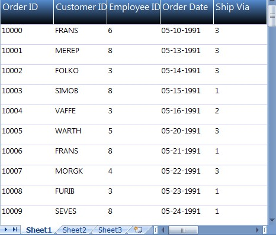
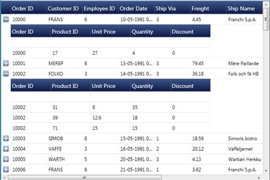
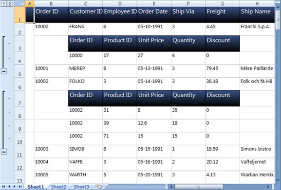
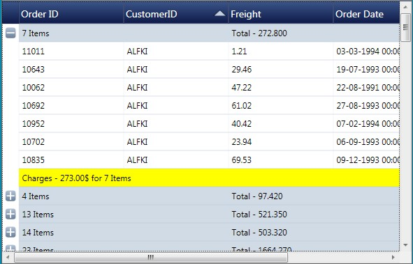

You can convert the entire content of a GridDataControl to an Excel Spreadsheet. You can also avail the option for specifying the version of the Excel file using the ExcelVersion enum. The version can be one of the following:
· ExcelVersion.Excel97to2003
· ExcelVersion.Excel2007
The following code illustrates the conversion of GridDataControl contents to an Excel Spreadsheet:
|
[C#]
gridDataControl.ExportToExcel("Sample.xlsx", ExcelVersion.Excel2007 );
(or)
gridDataControl.ExportToExcel("Sample.xls", ExcelVersion.Excel97to2003 ); |

Figure 236: GridDataControl

Figure 237: GridDataControl content in an Excel Spreadsheet
The above images shows how the entire content of the GridDataControl is exported to an Excel Spreadsheet.
You can also avail the choice of converting the selected rows of GridDataControl to an Excel Spreadsheet.
The following code illustrates the conversion of selected rows of GridDataControl to an Excel Spreadsheet:
|
[C#]
grid.ExportToExcel(grid.Model.SelectedRanges.ActiveRange,"sample.xlsx", ExcelVersion.Excel2007); |
You can convert the content of a GridDataControl, with Nested Child to an Excel Spreadsheet. Parent and visible child content are exported to Excel Spreadsheet.
The following code illustrates the conversion of GridDataControl with Nested Child to an Excel Spreadsheet:
|
[C#]
gridDataControl.ExportToExcel("Sample.xlsx", ExcelVersion.Excel2007 );
(or)
gridDataControl.ExportToExcel("Sample.xls", ExcelVersion.Excel97to2003 ); |
 Note: Only the visible child's contents will be
exported.
Note: Only the visible child's contents will be
exported.

Figure 238: GridDataControl with NestedChild

Figure 239: GridDataControl with NestedChild content in an Excel Spreadsheet
The above images shows how the GridControl, with Nested Child is exported to an Excel Spreadsheet.
You can convert the content of a GridDataControl, with Grouping to an Excel Spreadsheet. The following code illustrates this feature:
|
[C#]
gridDataControl.ExportToExcel("Sample.xlsx", ExcelVersion.Excel2007 );
(or)
gridDataControl.ExportToExcel("Sample.xls", ExcelVersion.Excel97to2003 ); |
Note: Only the
visible grouping contents will be exported.

Figure 240: GridDataControl with Grouping

Figure 241: GridDataControl with Grouping content in an Excel spreadsheet
The above images shows how the GridControl, with Grouping is exported to an Excel Spreadsheet.